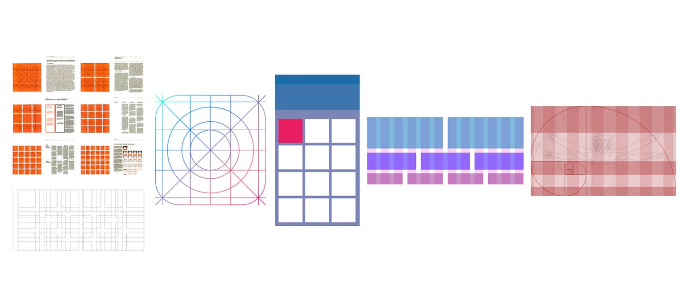
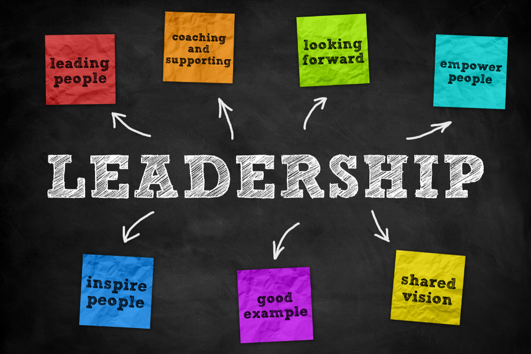
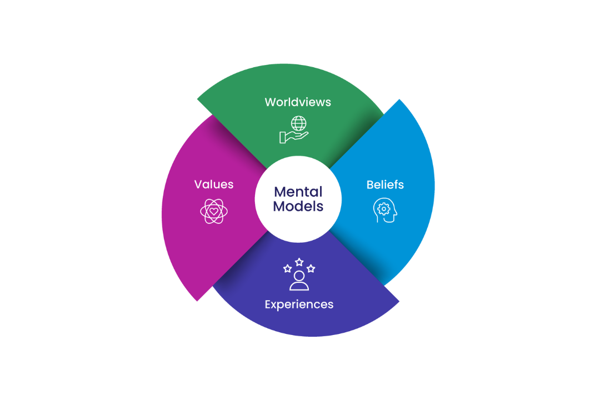

Explore some of our latest and greatest projects that showcase innovation and design excellence.

A grid system is a fundamental design tool that revolutionizes how we organize content on webpages and applications. It creates a series of vertical and horizontal lines that serve as an invisible framework, helping designers align elements consistently and maintain visual harmony. By implementing a well-structured grid system, teams can achieve better scalability, ensure responsive layouts that work across all devices, and maintain brand consistency throughout their digital products. This project explores best practices for implementing grid systems and demonstrates how they improve both design efficiency and user experience.

Great leadership isn't just about making the right decisions—it's about inspiring your team to achieve extraordinary results. This project examines the fundamental principles of effective leadership drawn from successful teams across various industries. We explore how visionary leaders establish clear goals, build trust within their teams, and create a culture of excellence and accountability. Through case studies and real-world examples, this project demonstrates how leadership qualities like communication, resilience, and adaptability can transform organizations and lead to unprecedented success and growth.

Mental models are powerful cognitive frameworks that help product managers understand and simplify complex processes and relationships. They serve as mental shortcuts that allow teams to make faster, more informed decisions by breaking down complicated problems into manageable components. This project explores essential mental models that every product manager should have in their toolkit, including systems thinking, first-principles reasoning, and user-centered thinking. By mastering these mental models, product managers can better anticipate challenges, identify opportunities for innovation, and lead their teams toward building products that truly resonate with users.